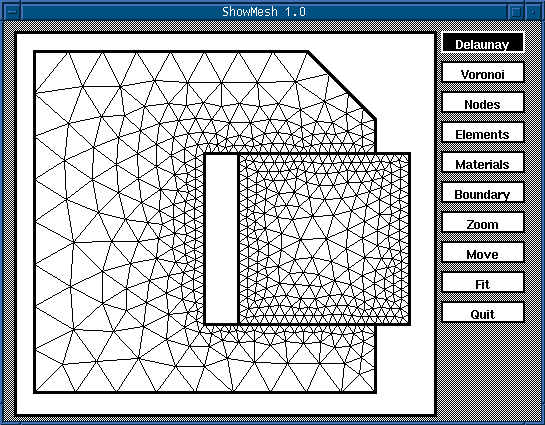

ShowMesh
version 1.0

So far, ShowMesh has been compiled and run on the following computing platforms:
When compiling ShowMesh, the option
for including the X library should be added:
cc -o ShowMesh -O3 showmesh.c -lX11
On some machines you should specify the path to the X libraries and
include files. This is achieved with the -I
and -L options.
For example, when I compile ShowMesh on the Red Hat Linux, I have
to type:
gcc -o ShowMesh -O3 -I/xxx -L/xxx showmesh.c
-lX11
If you have problems compiling it on your machine, the best thing you can do is to ask your local system administrator (sometimes called guru).
To visualise the mesh with ShowMesh,
you must have the node file (NAME.n),
the element file (NAME.e), and the
side file (NAME.s). These three files
are created with EasyMesh. If you have
these files, you can run ShowMesh with
the following command:
ShowMesh NAME
NAME has to be entered withot extensions, as it was for EasyMesh. No command line options are available with this version.
ShowMesh has only ten functions, and they are all accessible through the buttons shown in the application window. You can see these commands on the figure at the top of this page.
Delaunay and Voronoi buttons are used for drawing the Delaunay and the Voronoi mesh. Voronoi mesh is drawn with dotted lines. Nodes and Elements buttons are for writting node and element numbers respectively. Node numbers can be shown only when the Delaunay or Voronoi mesh is also shown. Element numbers can be written only when the Delaunay mesh is shown. Materials and Boundary buttons are used to draw the material and boundary condition marks. The boundary condition marks are written on both the boundary nodes and on the sides. (I believe that some users will place boundary conditions on the sides.) Material marks and element numbers cannot be shown in the same time.
Zoom and Move buttons are used to zoom the region of the mesh and to move the mesh around the window. The only thing which has to be noted about these functions is that when using them, you must not drag to draw the zoomed region or displacement, but click twice. You will undestand that as soon as you try it. To fit the whole mesh in the actual window size, you must use the Fit command. You will probably have to use Fit even after the resizing of the application window.
The Quit command exits the program.